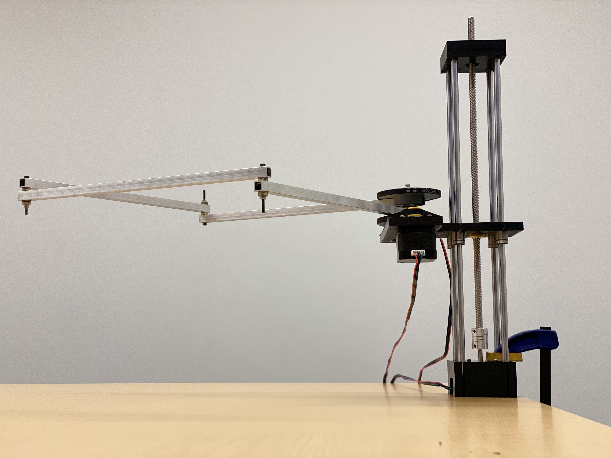
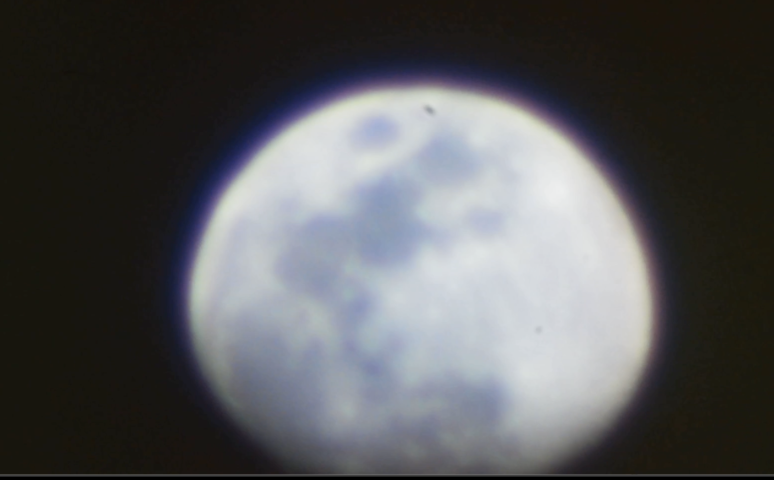

Sydney Yan



About Me
Hello! I’m currently a master’s student in Computer Science at Stanford University,
and I’ll be starting my Electrical Engineering PhD there in the fall.
My research interests revolve around optical sensing and robotics,
but I also have deep interests in astronomy, physics, music, puzzling, and so much more.
I am currently advised by Amin Arbabian for the Airborne Sonar project. I was previously in
the Stanford Intelligent and Interactive Autonomous Systems Group, the Stanford Navigation and Autonomous Vehicles Lab, and the Stanford LIGO group under Brian Lantz.
In the past, I've interned as a space lasers engineer at SpaceX,
an AI/ML architect on the Apple Camera team, and a quantum optics research intern at NASA Jet Propulsion Laboratory.
I've also served as co-president of Stanford Student Robotics and Stanford ACM, helping develop events like Stanford Puzzle Hunt and Stanford Escape.
I help run lab64, the EE department makerspace.


About Me
Hello! I’m currently a master’s student in Computer Science at Stanford University, and I’ll be starting my Electrical Engineering PhD there in the fall. My research interests revolve around optical sensing and robotics, but I also have deep interests in astronomy, physics, music, puzzling, and so much more.
I am currently advised by Amin Arbabian for the Airborne Sonar project. I was previously in the Stanford Intelligent and Interactive Autonomous Systems Group, the Stanford Navigation and Autonomous Vehicles Lab, and the Stanford LIGO group under Brian Lantz.
In the past, I've interned as a space lasers engineer at SpaceX, an AI/ML architect on the Apple Camera team, and a quantum optics research intern at NASA Jet Propulsion Laboratory.
I've also served as co-president of Stanford Student Robotics and Stanford ACM, helping develop events like Stanford Puzzle Hunt and Stanford Escape. I help run lab64, the EE department makerspace.